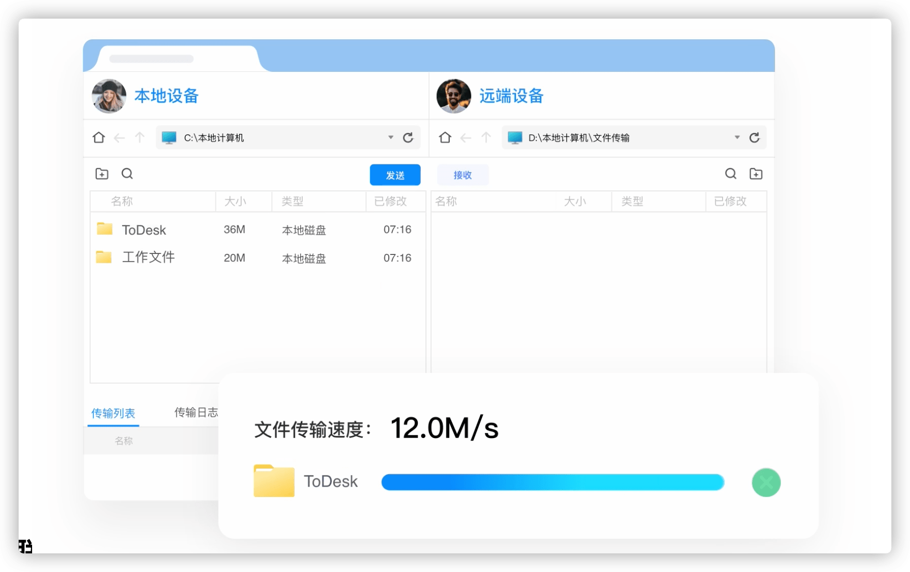

目前来说是跨平台比较好用的远程控制工具了
ToDesk 作为一款安全免费不限速的远程控制软件，通过领先的网络技术搭建并运营自己的网络系统，拥有覆盖全球的多节点、多业务，毫秒级延时应用层路由系统，带给用户像使用本地电脑一样的体验感。支持在任何场景下随时远程连接公司或个人异地设备，不仅具有文件传输、远程打印、远控摄像头、隐私屏、安全验证密保等众多功能，还可以实现对无人值守设备的管理、运维，同时企业业务人员可通过 ToDesk 远程支持外部合作伙伴、外部设备、客户 SOS 服务等；
1. 特点介绍
更快 更稳定 更安全
- 更安全
- 通讯数据使用
SSL+ChaCha20+Poly1305端到端加密
- 通讯数据使用
- 跨平台
- 全平台支持，各平台相互连接不受限
- 跨平台快速直连，随时随地都能远程控制
- 支持跨平台的远程控制，有且不限于
PC对PC，iOS/Android也可以直接控制
- 更稳定
- 能在各种复杂结构网络，弱联网下运作良好
- 包括
TCP直连、TCP中转、P2P(KCP)、UPNP - 能轻松穿透内网，在复杂
NAT网络下使用 - 流畅的屏幕传输算法以及遍布全国的加速节点
- 文件传输
- 文件传输，免费高速不卡顿，免费高清不限速
- 使用文件管理器互相传输文件或直接拖拽传输，传输速度可高达
12m/s
- 灵活管理
- 大容量设备列表，灵活管理
- 适配各种分辨率屏幕，多屏幕设备
- 如同通讯录一般管理设备，可以无限添加设备至设备列表中
- 即便只有单台设备也可以同时控制多台设备，不再为设备多而犯愁
- 其他功能
- 隐私屏
- 远程打印
- 远程摄像头
- 远程终端
- 手机投屏
2. 常用功能
介绍使用 ToDesk 软件常用到的一些功能！
ToDesk 是一个远程控制软件，支持在内网、外网和移动网络环境下，随时随地发起远程控制。
- [1] 无人值守
- 使用复杂密码，无人值守将使你的设备始终处于可访问状态
- 请将系统 自动休眠 禁用，因为系统超时进入休眠状态就会断开网络连接
1.注册并登陆ToDesk账号
2.设置安全密码 - 高级设置 -> 安全设置 -> 仅使用安全密码
3.设置开机自启动 - 高级设置 -> 基本设置 -> 开机自动启动
- [2] 文件传输
- 文件传输的三种方式
1.通过键盘快捷键 - Ctrl+C Ctrl+V
2.选中文件拖拽到远程屏幕内，也可反向拖拽到本机
3.远程控制画面 -> 顶部菜单 -> 文件

- [3] 锁定界面
- 防止其他人修改和查看你的
ToDesk的设定 - 此功能需要登陆后使用且解锁密码为你的账号密码
- 防止其他人修改和查看你的
高级设置 -> 基本设置 -> 启动时自动锁定
高级设置 -> 基本设置 -> 最小化时自动锁定
- [4] 隐私屏
- 启用隐私屏后，远程显示器将不再显示画面并阻止远端键盘鼠标的操作
1.此功能需要登陆 ToDesk 账号后才能使用
2.此功能暂不支持 WindowsXP/2003 操作系统
3.被控端 操作系统版本为: WindowsVista, Windows7 需要安装额外驱动
- [5] WOL 远程开机
- 需要先设置主板 BIOS
- 被唤醒的计算机同一局域网中，需要有一台设备正在运行 ToDesk
3. 收费标准
个人使用的话，基本可以理解为免费的！
这里值得一说的是，ToDesk 是如何诞生的。ToDesk 产品立项于 2020 年 疫情爆发期间，很多互联网公司受疫情影响导致日常工作及客户维护无法有效进行，和大多企业一样急于寻找流畅、稳定的远程控制软件来进行正常的工作开展。 然而在尝试了多款远程控制软件后，都难以达到理想的远程办公效果，于是决定立项自行研发一款稳定流畅的远程控制软件。
4. 命令使用
在 Windows 上面使用命令行控制软件行为
ToDesk 支持通过命令行参数调用，暂时仅支持 Windows 3.0.1 或更高版本。
- 命令行参数
# 浏览器快速发起一个远程连接(示例)
todesk://connect&123456789&123456
# 获取帮助
ToDesk.exe -help
ToDesk.exe -help -control
# 当前版本号
ToDesk.exe -version
# 当前运行状态
ToDesk.exe -status
# 获取设备代码
ToDesk.exe -getid
# 设置安全密码
ToDesk.exe -setpasswd password
# 设置开机启动
ToDesk.exe -autostart on/off
# 登陆账户并保存
ToDesk.exe -user aaaa@aaaa -passwd 123456
# 退出当前登录账号
ToDesk.exe -signout
# 发起控制
ToDesk.exe -control -id 123456789 -passwd 123456
# 设置代理并启用
ToDesk.exe -setproxy -proxyip 192.168.0.2 -port 8080
# 启用/禁用代理上网
ToDesk.exe -proxy on/off
# 退出运行
ToDesk.exe -exit
- 命令行参数 - Linux
# 启停操作
$ systemctl start todesk.service
$ systemctl stop todesk.service
$ systemctl restart todesk.service
# 查看状态
$ todesk
- 使用示例
@echo off
for /f "delims=" %%i in ('"E:\ToDesk\ToDesk.exe" -status') do echo %%
ipause
5. 工具推荐
除了可以使用 ToDesk 之外，还可以使用 向日葵、AnyDesk、RustDesk 等远程工具！
远程技术的核心，就是网络和打洞技术，其他的配套设施也很重要，比如多端互联，界面优雅且高可用。
[1] 向日葵国民远控 满足不同人群需求
无论何时何地，希望您能自由随心访问和管理您的电脑，哪怕无人值守，设备无网，照样轻松搞定。
- 向日葵
- 远程办公 随时随地都可通过向日葵远程控制公司电脑
- 远程设计 切换高清模式，智能化算法优化图像传输效率
- 远程游戏 游戏模式采用毫秒级响应内核，Windows 控
- 跨平台远控 支持 Windows/macOS/Linux/Android/iOS 之间互连
- 远程电脑文件 支持复制粘贴或拖拽文件传输
- 传输快速又方便 大文件建议使用远程文件功能
稳定、清晰、流畅，使用 BGP 跨线路云服务器、多节点服务器及 H.264 智能视频模式。网络稳定、远程流畅。
# ubuntu
$ sudo apt install -y ./anydesk.xxx.deb
[2] 随时随地访问任何设备 始终安全快捷
克服距离，我们推崇可以提高用户生产力和创造力的软件。这就是为什么我们把我们的使命定义为：打造一个能够让您无论您身在何处都达成卓越成就的产品。
- AnyDesk - 快速
- 速度极快 自有 DeskRT 编解码器，延迟最低帧率为
60 fps - 轻量级 下载包仅 3MB，启动应用程序，完成
- 安全 军用级
TLS 1.2安全，256位AES传输加密 - 多平台支持 适用于 Windows、macOS、iOS、Android、Linux、Raspberry Pi 之间互连
- 访问与控制 实现无延迟的桌面分享、稳定的远程管理，以及设备之间快速安全的数据传输
- 管理与定制 功能并非一成不变，我们高度灵活的解决方案提供数不清的定制选项
- 速度极快 自有 DeskRT 编解码器，延迟最低帧率为
AnyDesk 安力桌满足你的需求，在云端或本地部署中运行(选择我们的云解决方案，利用我们的基础设施和服务，或者在您自己的服务器上安装，完全独立工作)，全面的移动设备支持(通过智能手机或平板电脑访问和控制桌面、服务器、机器和设备)，灵活和私人定制(根据您的个人需求，创建您自己的 AnyDesk 安力桌版本)。
# ubuntu
$ sudo apt install -y ./anydesk.xxx.deb
# reload
$ sudo systemctl daemon-reload
# server
$ sudo systemctl restart anydesk.service
# libpangox-1.0.so.0: cannot open shared object file
$ wget http://ftp.us.debian.org/debian/pool/main/p/pangox-compat/libpangox-1.0-0_0.0.2-5.1_amd64.deb
$ sudo apt install ./libpangox-1.0-0_0.0.2-5.1_amd64.deb
[3] 开源虚拟与远程桌面基础架构
远程桌面软件，开箱即用，无需任何配置。您完全掌控数据，不用担心安全问题。您可以使用我们的注册/中继服务器，或者自建，亦或者开发您的版本。
- RustDesk - 开源
- 安全 端到端加密，以及基于角色的访问权限控制
- 隐私 你可以选择 自建 服务器, 你的数据完全由你掌握
- 小巧 在
Windows上无需安装就可以运行 - 多端 在如下平台 Windows/macOS/Linux/iOS/Android/网页版 都可以工作
- 控制台 通过
Web控制台查询访问日志以及修改访问权限
尤为值得说的就是，官方提供并支持 自建中继服务器(官方自带的节点都在国外，相对来说对于国内用户不太友好)，即我们只需要下载对应客户端的软件之后使用自建服务就可以正常使用了。
# ubuntu
$ sudo apt install -y ./rustdesk.xxx.deb
# server
$ sudo systemctl restart rustdesk.service